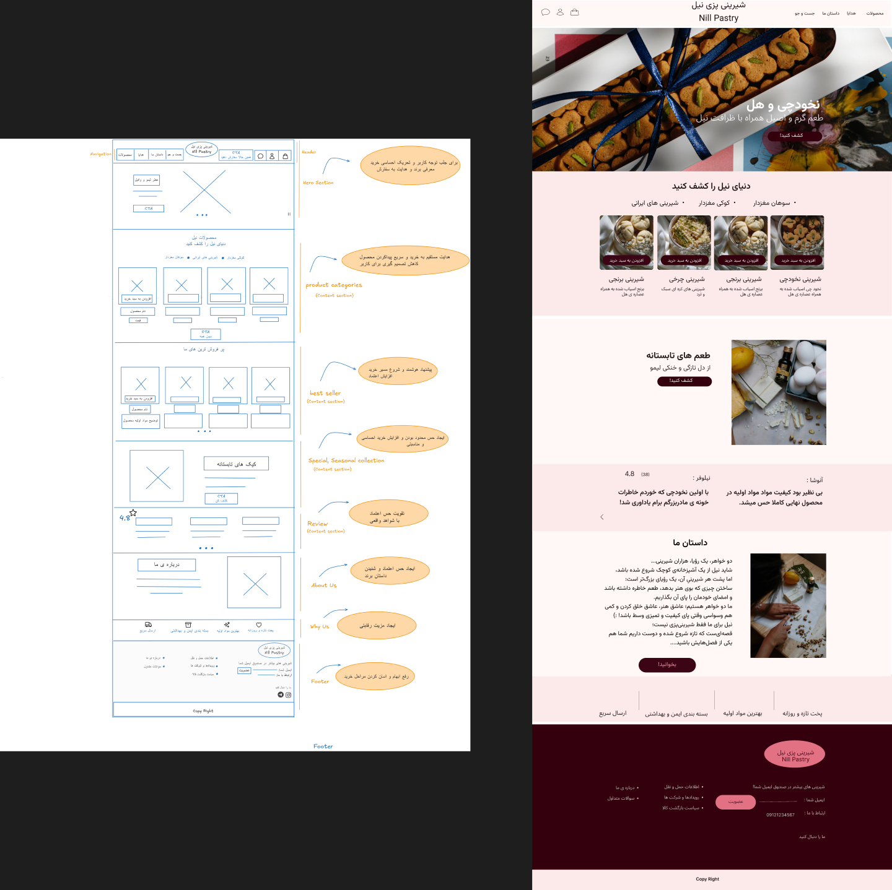
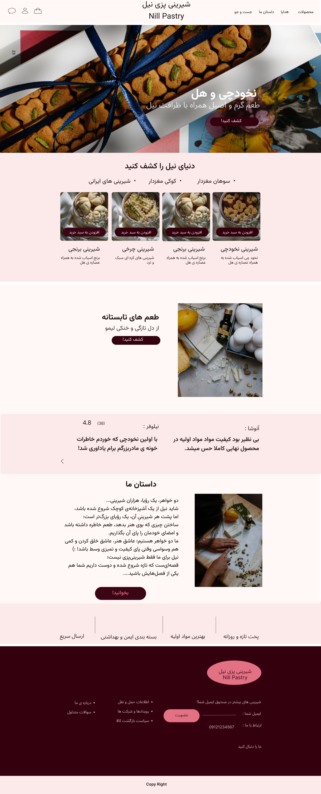

خلاصهٔ یکدقیقهای
مسئله
سفارش فقط از دایرکت ثبت میشد. قیمت، گامهای خرید و شرایط ارسال از کرج به تهران برای مشتری روشن نبود و خرید نیمهکاره رها میشد.
کاری که کردم
پنج مصاحبهٔ رفتارمحور، استخراج ده یافتهٔ کلیدی و دو پرسونا، نقشهٔ سفر و جریان کاربر، معماری اطلاعات، وایرفریم و رابط نهایی صفحهٔ اصلی.
راهحل
انتقال قیمت و گامهای سفارش از دایرکت به خود سایت، ساخت اعتماد با شواهد واقعی بهجای ادعا، و شفافکردن هزینه و زمان ارسال پیش از شروع خرید.
وضعیت
طراحی صفحهٔ اصلی تحویل شده است. محصول هنوز اجرا نشده، بنابراین عدد واقعی ندارم؛ معیارهای سنجش را پیش از اجرا تعریف کردهام.
صاحبان کسبوکار مسئله را «نداشتن سایت» تعریف کرده بودند. پذیرفتن همان تعریف، به سایتی ختم میشد که ظاهر مناسبی داشت اما ابهام پیشین را حفظ میکرد. تحقیق، تعریف مسئله را تغییر داد و تمام تصمیمهای بعدی از همان تغییر نشأت گرفت.
زمینهٔ کسبوکار
نیل (Nill Pastry) یک شیرینیپزی خانگی در کرج است که دو خواهر راهاندازی کردهاند و حدود شش ماه از فعالیتش میگذرد. محصولشان شیرینیهای اصیل ایرانی است و آنچه میفروشند فقط شیرینی نیست؛ کیفیت، اصالت و یک داستان است. میخواهند برندی باشند که مخاطب به یاد میآورد.
فروش از اینستاگرام و تلگرام انجام میشود و مشتریانشان در کرج و تهران هستند. سه مشکلی که خودشان مطرح کردند:
- ارسال بینشهری از کرج به تهران دغدغهٔ دائمیشان است.
- جلب اعتماد از طریق اینستاگرام سخت است و خرید نهایی اتفاق نمیافتد.
- مسیر رسمی و سریعی برای سفارشگیری وجود ندارد.
نکتهٔ مهم این است که موارد بالا تعریف آنان از مسئله بود، نه خودِ مسئله. وظیفهٔ من بررسی این بود که آیا مشتری واقعی نیز همین را بیان میکند.
چارچوب مسئله
پیش از هر چیز، آنچه را واقعاً میدانستیم از آنچه فقط فرض کرده بودیم جدا کردم. ستون سمت راست مشاهده و واقعیت است؛ ستون سمت چپ چیزی است که باید در مصاحبه آزموده میشد.
آنچه میدانیم
- کسبوکار در کرج است و به مشتریان کرج و تهران خدمات میدهد؛ ارسال بینشهری یک محدودیت واقعی است.
- سفارشها از اینستاگرام و تلگرام ثبت میشود.
- مشتری قیمت و زمان ارسال را در یک مسیر مشخص نمیبیند.
- هیچ مسیر رسمی و ساختاریافتهای برای ثبت سفارش وجود ندارد.
آنچه فرض میکنیم
- کاربران چون کسبوکار اینستاگرامی است اعتماد کافی ندارند.
- نگرانی دربارهٔ ارسال (تأخیر، کیفیت و سالم رسیدن محصول) روی خرید اثر میگذارد.
- نبود مسیر سفارش مشخص باعث سردرگمی میشود.
- کاربران برای خرید مطمئنتر دنبال مسیری رسمیتر از اینستاگرام هستند.
سه فرض از چهار فرض تأیید شد، اما نه به شکلی که انتظار میرفت. فرض چهارم رد شد: کاربران به دنبال «رسمیتر بودن» نبودند، بلکه به دنبال قابلپیشبینی بودن بودند. چند نفر بیان کردند که خرید از اینستاگرام را ترجیح میدهند، مشروط بر آنکه از جزئیات فرایند آگاه باشند.
اهداف طراحی
سه هدفی که تمام تصمیمهای بعدی را با آن سنجیدم:
افزایش حس اعتماد
کاربر پیش از خرید باید بتواند واقعیبودن برند و کیفیت محصول را از روی شواهد ارزیابی کند، نه از روی ادعا.
کاهش ابهام ارسال
هزینه و زمان ارسال باید پیش از شروع خرید معلوم باشد، نه بعد از آنکه کاربر درگیر شد.
شفافکردن مسیر سفارش
کاربر باید گام بعدی و وضعیت فعلی سفارش خود را در هر لحظه بداند؛ هم پیش و هم پس از پرداخت.
برنامهٔ تحقیق
پنج مصاحبهٔ عمیق و رفتارمحور انجام دادم. رویکرد اصلی این بود که دربارهٔ آنچه کاربر واقعاً انجام داده پرسیده شود، نه نظری که دارد. پرسش «به نظر شما چه چیزی باعث اعتماد میشود؟» پاسخی ذهنی به دست میدهد؛ اما پرسش «آخرین باری که از خرید آنلاین شیرینی منصرف شدید، دلیل آن چه بود؟» پاسخی مبتنی بر رفتار واقعی.
گونههای کاربری فرضی
پیش از آغاز مصاحبهها، این چهار گونه را بهعنوان فرض تعریف کردم تا جهت جستوجوی الگو مشخص باشد:
خریدار مناسبتی
تولد، مهمانی، نوروز. حجم کم، حساس به ظاهر و طعم، نگران رسیدن بهموقع.
خریدار هدیه
بستهبندی شیک و خاص برایش اولویت دارد.
خریدار احساسی
دنبال حس نوستالژی شیرینی خانگی است و دوست دارد داستان برند را بشنود.
خریدار اینستاگرامی
اتفاقی و از سر کنجکاوی رسیده؛ دغدغهٔ اصلیاش اعتماد است.
ساختار راهنمای مصاحبه
هر مصاحبه هشت بخش داشت و از پرسشهای مقدماتی به سمت تصمیمهای دشوارتر پیش میرفت:
| بخش | چه چیزی را دنبال میکرد |
|---|---|
| مقدمه | رابطهٔ شخصی فرد با شیرینی؛ ایجاد فضای گفتوگوی راحت پیش از پرسشهای اصلی. |
| روایت آخرین خرید | کل فرایند از لحظهٔ تصمیم تا دریافت محصول؛ ستون فقرات مصاحبه. |
| کشف و آشنایی | شیوهٔ یافتن برندهای خانگی و عواملی که توجه کاربر را جلب میکند. |
| اعتماد و تصمیم | مواردی که کاربر پیش از خرید بررسی میکند و نشانههایی که برای او اعتبار میسازند. |
| ارسال و ریسک | نگرانیهایی که پیش از پرداخت شکل میگیرد، بهویژه در خرید بینشهری. |
| حساسیت قیمتی | نقش قیمت و هزینهٔ ارسال در تصمیمگیری و مرز انصراف از خرید. |
| انگیزه و احساس | موقعیتهایی که خرید در آنها رخ میدهد و معنایی که محصول برای کاربر دارد. |
| پس از خرید | انتظار از برند پس از پرداخت و شرایط لازم برای خرید مجدد. |
یافتهها
پاسخها را در FigJam دستهبندی کردم و به چهار خوشهٔ رفتاری رسیدم. هر خوشه چند الگوی تکرارشونده دارد.
۱. نشانههای شکلگیری اعتماد
اعتماد بصریVisual Trust
- عکس واقعی، منظم و باکیفیت بهعنوان نمایندهٔ محصول پذیرفته میشود.
- عکس ساختهشده با هوش مصنوعی اعتماد را از بین میبرد، چون از محصول واقعی فاصله دارد.
- تطابق تصویر با محصول واقعی، معیار اصلی تأیید کیفیت است.
شفافیت فرایندProcess Transparency
- ویدیو و عکس از مراحل کار و پشتصحنه، نشانهٔ واقعیبودن کسبوکار است.
- انتشار مداوم پست و استوری و تعامل با مشتری، حس تداوم فعالیت کسبوکار را منتقل میکند.
اعتماد انسانیHuman Trust
- نمایش چهرهٔ صاحبان کسبوکار حس نزدیکی و واقعیبودن میسازد.
- داستان برند به کاربر کمک میکند هویت و اصالت را درک کند.
اعتماد اجتماعیSocial Proof
- دنبالکنندهٔ مشترک بهعنوان نشانهٔ اعتبار اجتماعی خوانده میشود.
- معرفی توسط دوستان، معتبرترین شکل اعتماد اولیه است.
اعتماد ارزشیValue-based Trust
- وقتی قیمت، کیفیت و ظاهر در تعادل باشند، اعتماد بیشتر میشود.
- تنوع محصول حس کنترل در تصمیمگیری میدهد.
اعتماد ارتباطیInteraction Trust
- پاسخ محترمانه و کامل در دایرکت، حس حرفهایبودن برند را میسازد.
۲. ریسک و ارسال
تأخیر در ارتباطCommunication Delay
- دیر پاسخدادن دایرکت باعث انصراف میشود و حس «بعداً هم پشتیبانی نخواهم داشت» میدهد.
- حد تحمل کاربران حدود ۱۲۰ دقیقه بود.
ابهام پیش از خریدOrder Uncertainty
- نامشخص بودن زمان تحویل، ریسک درکشدهٔ تصمیم را بالا میبرد.
- نبود قیمت باعث انصراف میشود و حس ناامنی میسازد.
ریسک فیزیکی محصولDelivery Quality
- سالم و بهداشتی رسیدن محصول اهمیت بالایی دارد و نگرانی جدی است.
حساسیت هزینهCost Sensitivity
- هزینهٔ ارسال بالا باعث انصراف میشود؛ مرز تحمل حدود ۲۰۰ هزار تومان بود.
- در خرید مناسبتی و هدیه، هزینهٔ ارسال کماهمیتتر است تا خرید شخصی.
اضطراب پس از پرداختPost-Purchase Anxiety
- سکوت بعد از پرداخت اضطراب را بالا میبرد.
- ندانستن وضعیت سفارش، حس ناامنی و ریسک میدهد.
۳. انگیزهٔ احساسی
- کاربران دنبال تجربهای هستند که حس خانگیبودن و کیفیت مواد اولیه را منتقل کند؛ اینها ارزش احساسی خرید را بالا میبرند.
- بستهبندی شیک عمدتاً در موقعیت هدیهدادن اهمیت دارد و به ارزش محصول اضافه میکند.
۴. پس از خرید
- وقتی تحویل مطابق انتظار باشد (هم از نظر زمان و هم کیفیت)، تمایل به خرید مجدد شکل میگیرد.
- اگر محصول در مسیر آسیب ببیند، کاربر انتظار دارد برند مسئولیت جبران را بپذیرد؛ این برایش نشانهٔ قابلاعتماد بودن است.
- کاربران در کل تجربهٔ خرید با پیچیدگی و نبود شفافیت روبهرو میشوند و مسیری سادهتر و قابلپیشبینیتر میخواهند.
بینشها
یافتهها توصیف رفتار هستند؛ بینش، تبیین چرایی آن رفتار است. تصمیمهای طراحی از همین لایه استخراج میشوند.
اعتماد
- کاربر پیش از خرید آنلاین نمیتواند کیفیت را ارزیابی کند، پس به نشانههای جایگزین تکیه میکند: واقعیبودن تصویر، هویت انسانی، پشتصحنه و داستان برند.
- انتشار مداوم محتوا به کاربر نشان میدهد کسبوکار فعال است؛ در مقابل، سکوت بهعنوان توقف فعالیت تفسیر میشود.
- پاسخ محترمانه و کامل در دایرکت، خود یک نشانهٔ اعتماد محسوب میشود، نه صرفاً یک خدمت.
- عکس واقعی
- پشتصحنه
- چهرهٔ صاحبان
- داستان برند
- فعالیت مستمر
- معرفی دوستان
- پاسخ کامل دایرکت
ریسک
- بخش بزرگی از اضطراب کاربر از نداشتن دید و کنترل روی فرایند سفارش میآید؛ میخواهد بداند چه اتفاقی برای سفارشش میافتد و کِی به دستش میرسد.
- پاسخگویی دیرهنگام را نشانهٔ پشتیبانی ضعیف در آینده میخواند، نه یک تأخیر ساده.
- نبود قیمت را محدودیت اطلاعاتی نمیبیند؛ آن را پنهانکاری تفسیر میکند و ریسک درکشده بالا میرود.
- زمان تحویل نامشخص
- سکوت پس از پرداخت
- ندانستن وضعیت سفارش
- پاسخ دیرهنگام
- نبود قیمت
- نگرانی سالم رسیدن
- هزینهٔ ارسال
احساس
- شیرینی برای بسیاری از کاربران صرفاً خوراکی نیست؛ بخشی از یک مناسبت، هدیه یا تجربهٔ احساسی است. به همین دلیل نحوهٔ ارائهٔ محصول به اندازهٔ خود محصول اهمیت دارد.
- کاربران به دنبال حس نوستالژی و خانگیبودن هستند؛ ویژگیای که برندهای بزرگ قادر به ارائهٔ آن نیستند و مزیت رقابتی نیل به شمار میرود.
- خرید مناسبتی
- خرید هدیه
- حس خانگی
- کیفیت مواد اولیه
- بستهبندی شیک
ارزش و هزینه
- کاربران هزینهها را بهصورت جداگانه ارزیابی نمیکنند؛ ارزش کلی تجربه را میسنجند و زمانی خرید را منطقی میدانند که کیفیت، ظاهر و هزینه در تعادل باشد. هزینهٔ ارسال بهتنهایی مسئله نیست؛ نسبت آن به ارزش کل خرید اهمیت دارد.
- قیمت معقول
- کیفیت بالا
- ظاهر خوب
- حساسیت به هزینهٔ ارسال
- تفاوت هدیه و شخصی
پس از پرداخت
- اعتماد کاربر با پرداخت پایان نمییابد. نحوهٔ پیگیری سفارش، تحویل محصول و واکنش برند به مشکلات تعیین میکند که کاربر خرید را تکرار خواهد کرد یا خیر. بنابراین تجربهٔ پس از پرداخت نیز بخشی از دامنهٔ طراحی است، نه صرفاً وظیفهٔ پشتیبانی.
- تحویل سالم
- تحویل بهموقع
- جبران خسارت
- خرید مجدد
- اضطراب پس از پرداخت
پرسوناها
دو پرسونای تصمیمساز از مصاحبهها استخراج شد. این دو، پروفایل جمعیتشناختی نیستند؛ بلکه دو منطق تصمیمگیری متفاوت را نشان میدهند و هر یک در نقطهٔ متفاوتی از مسیر خرید ریزش میکنند.
خریدار اعتمادمحور
انگیزهٔ اصلی
چون نمیتواند کیفیت محصول را پیش از خرید لمس کند، برای کاهش ریسک به نشانههای واقعیبودن برند تکیه میکند.
هدف
خریدی مطمئن از جهت واقعیبودن برند و کیفیت بالای محصول.
رفتار
- عکسها را از نظر واقعیبودن و کیفیت بررسی میکند
- دنبال روند تولید و کارگاه میگردد
- چهرهٔ صاحبان برند را جستوجو میکند
- دنبالکنندهٔ مشترک را چک میکند
- در دایرکت انتظار پاسخ کامل و محترمانه دارد
نقاط درد
- تصاویر غیرواقعی و ساختهشده با هوش مصنوعی
- نبود هویت انسانی پشت برند
قاعدهٔ تصمیم: اگر نتواند تأیید بگیرد، خرید را متوقف میکند.
خریدار محتاط
انگیزهٔ اصلی
چون فرایند خرید آنلاین را غیرقابلپیشبینی میداند، دنبال حداکثر کنترل و شفافیت است.
هدف
اطمینان از زمان تحویل، کنترل وضعیت سفارش و کاهش استرس پس از پرداخت.
رفتار
- قیمت را در پستها جستوجو میکند
- دنبال زمان مشخص تحویل است
- کیفیت بستهبندی را بررسی میکند
- به سرعت پاسخگویی در دایرکت حساس است
نقاط درد
- ندانستن وضعیت سفارش
- سکوت بعد از پرداخت
- پاسخ دایرکت دیرتر از ۱۲۰ دقیقه
قاعدهٔ تصمیم: اگر فرایند قابلپیشبینی نباشد، منصرف میشود.
پرسونای نخست پیش از خرید ریزش میکند، زیرا برند را باور نکرده است. پرسونای دوم در میانه یا پس از خرید ریزش میکند، زیرا کنترلی بر فرایند ندارد. یک راهحل واحد پاسخگوی هر دو نیست؛ به همین دلیل طراحی دو دستهٔ مجزا از پاسخ دارد: شواهد اعتماد در بخشهای ابتدایی صفحه، و شفافیت فرایند در سراسر مسیر.
سفر کاربر
وضعیت فعلی خرید از دایرکت، در پنج مرحله و با احساس غالب هر مرحله:
کشف
وارد پیج میشود، کنجکاو است و میخواهد بفهمد این برند چیست و چه میکند.
کنجکاوی · امیداعتماد
دنبال نشانه میگردد: عکسها، استوریها، قیمت. هنوز مطمئن نیست.
تردید · ارزیابیتصمیم
دایرکت میدهد و دربارهٔ قیمت و نحوهٔ ارسال میپرسد. ممکن است گیج شود.
گیجی · انتظارپس از پرداخت
برای تحویل استرس دارد و هر بار که از وضعیت بیخبر میماند، مضطرب میشود.
اضطراب · بیخبریتحویل
محصول میرسد و تجربهٔ نهایی شکل میگیرد: رضایت یا ناامیدی.
رضایت یا ناامیدیپایینترین نقطهٔ احساسی، مرحلهٔ چهارم است؛ یعنی زمانی که کاربر پرداخت را انجام داده اما هیچ اطلاعاتی در اختیار ندارد. تجربهٔ فعلی برای این مرحله هیچ طراحیای ندارد، در حالی که تصمیم به خرید دوم دقیقاً در همین نقطه شکل میگیرد.
جریان فعلی خرید
یازده گام مسیر فعلی. گامهای برجستهشده نقاطی هستند که کاربران در مصاحبه صراحتاً به مکث یا انصراف در آنها اشاره کردند:
- ورود به پیج
- دیدن پست یا استوری محصول
- بررسی اعتماد: عکس، پشتصحنه، نظرات ریزش پرسونا ۱
- تصمیم به خرید
- پیام در دایرکت اصطکاک
- دریافت قیمت و زمان تحویل تا ۱۲۰ دقیقه انتظار
- ثبت سفارش
- دریافت پیام تأیید
- انتظار و پیگیری وضعیت ریزش پرسونا ۲
- دریافت محصول
- تجربهٔ نهایی
نکتهٔ کلیدی: چهار گام از یازده گام (۳، ۵، ۶ و ۹) اصطکاکزا هستند و هر چهار حول یک محور مشترک قرار دارند؛ کاربر اطلاعات لازم برای تصمیمگیری را در اختیار ندارد و برای دریافت آن ناچار است منتظر پاسخ انسانی بماند. همین، تعریف نهایی مسئله شد.
چطور میتوانیم…
هر بینش را به یک پرسش طراحی تبدیل کردم تا ایدهپردازی جهتدار باشد:
- چطور میتوانیم نشانههای واقعیبودن برند را دقیقاً در نقاط تصمیمگیری کاربر نمایش دهیم؟ از بینش اعتماد
- چطور میتوانیم پیش از خرید، سطح اطمینان کاربر نسبت به واقعیبودن برند را بالا ببریم؟ از بینش اعتماد
- چطور میتوانیم عدم قطعیت را در هر مرحله از مسیر کاربر کاهش دهیم؟ از بینش ریسک
- چطور میتوانیم تجربهٔ دریافت محصول را به تجربهای احساسی و مناسبتی تبدیل کنیم که ارزش هدیه را بالا ببرد؟ از بینش احساس
ایدهپردازی و اولویتبندی
ایدهها را حول سه محور اعتماد، ریسک و احساس تولید کردم و سپس به دو دسته تقسیم کردم: آنچه باید در نسخهٔ نخست حضور داشته باشد، و آنچه ارزشمند است اما قابل واگذاری به فاز بعد. معیار اولویتبندی این بود که هر ایده کدام نقطهٔ ریزش را میبندد.
| محور | ایده | چه چیزی را حل میکند | اولویت |
|---|---|---|---|
| اعتماد | اعتماد اجتماعی: عکس و استوری مشتری، هایلایت نظرات، هشتگ برند | ریزش پرسونا ۱ پیش از خرید | MVP |
| پشتصحنه: ویدیو پخت، نمایش کارگاه، عکس بستهبندی واقعی پیش از ارسال | ناتوانی در ارزیابی کیفیت | MVP | |
| هویت انسانی: نمایش چهرهٔ واقعی صاحبان کسبوکار | نبود اعتماد انسانی | MVP | |
| نشان اعتماد: «بیش از x ارسال موفق کرج به تهران» | ریسک درکشدهٔ ارسال بینشهری | فاز بعد | |
| ریسک | پیگیری سفارش: چهار وضعیت ثبت، آمادهسازی، ارسال، تحویل | سکوت پس از پرداخت | MVP |
| بازهٔ تحویل: تاریخ دقیق بهجای «۳ تا ۵ روز آینده»، با بهروزرسانی در صورت تغییر | ابهام زمان تحویل | MVP | |
| پیشنمایش بستهبندی: ارسال عکس بستهبندی نهایی پیش از ارسال | نگرانی سالم رسیدن محصول | MVP | |
| تضمین تحویل: جبران در صورت تأخیر، بازپرداخت یا ارسال مجدد در صورت آسیب | ریسک مالی خرید آنلاین | MVP | |
| احساس | حالت هدیه: پیشنمایش بستهبندی هدیه، نمایش باز کردن جعبه، کارت پیام | ارزش احساسی در خرید هدیه | فاز بعد |
گزینهٔ جذاب، طراحی یک سامانهٔ کامل پیگیری سفارش بود. اما این کسبوکار دو نفره است و روزانه چند سفارش دارد. ایدهٔ MVP آگاهانه در حد پیام وضعیت در دایرکت یا یک بات تلگرام تعریف شد، زیرا مشکل کاربر «نداشتن داشبورد» نیست، بلکه «بیاطلاع ماندن» است. کمهزینهترین راهحلی که این مشکل را برطرف کند، مناسبترین راهحل است.
از وایرفریم تا رابط
وایرفریم را بههمراه یادداشتگذاری ساختم و کنار هر بخش، کارکرد مورد انتظار آن را ثبت کردم. این کار سبب شد در مرحلهٔ طراحی رابط، تصمیمها بر پایهٔ هدف اتخاذ شوند و نه سلیقه.

معماری اطلاعات صفحهٔ اصلی
ترتیب بخشها تصادفی نیست و از منطق تصمیمگیری کاربر پیروی میکند:
- هیرو: جلب توجه و تحریک احساسی خرید، معرفی برند و هدایت به سفارش.
- دستهبندی محصولات: هدایت مستقیم به خرید و یافتن سریع محصول؛ کاهش بار تصمیمگیری.
- پرفروشها: پیشنهاد هوشمند برای شروع مسیر خرید و افزایش اعتماد.
- مجموعهٔ فصلی: ساخت حس محدود بودن و تقویت خرید مناسبتی.
- نظرات: تقویت اعتماد با شواهد واقعی، نه ادعا.
- داستان ما: ساخت اعتماد انسانی و شنیدن داستان برند.
- چرا ما: ساخت مزیت رقابتی در چهار نقطه؛ پخت تازه، مواد اولیه، بستهبندی ایمن و ارسال سریع.
- فوتر: رفع ابهام باقیمانده؛ اطلاعات حملونقل، سؤالات متداول، سیاست بازگشت و راههای تماس.

زبان بصری
پالت رنگی از خود محصول استخراج شد: شرابی عمیق برای عناصر تصمیمساز و دکمهها، صورتی روشن برای زمینهٔ بخشهای احساسی، و فضای خالی کافی تا تصویر محصول فضای لازم را داشته باشد. تمام تصاویر واقعی هستند و هیچ تصویر تولیدشده با هوش مصنوعی به کار نرفته است؛ این تصمیمی مستقیم بر پایهٔ یافتهٔ «اعتماد بصری» بود، نه یک انتخاب سلیقهای.

تصمیمها در یک نگاه
این جدول ستون فقرات پروژه است: هر تصمیم طراحی به یافتهای متصل است که از مصاحبهها استخراج شده. پاسخ هر پرسش دربارهٔ دلیل یک تصمیم، در ستون نخست قرار دارد.
| یافته از تحقیق | تصمیم طراحی | کجا دیده میشود |
|---|---|---|
| کاربر کیفیت را پیش از خرید نمیتواند بسنجد و تصویر مصنوعی اعتماد را از بین میبرد. | فقط عکاسی واقعی محصول در تمام سطوح؛ هیچ رندر یا تصویر تولیدشدهای استفاده نشد. | هیرو، کارت محصولات، پرفروشها |
| نبود قیمت را کاربر «پنهانکاری» میخواند، نه کمبود اطلاعات. | قیمت و دکمهٔ افزودن به سبد روی خود کارت محصول، پیش از هر گفتگویی. | دستهبندی محصولات، پرفروشها |
| پشتصحنه و کارگاه، نشانهٔ واقعیبودن کسبوکار است. | بخش داستان ما با تصویر واقعی حین کار، نه عکس استوک. | بخش داستان ما |
| نمایش چهره و هویت صاحبان، حس نزدیکی میسازد. | روایت اولشخص دو خواهر در داستان برند، با لحن شخصی و نه تبلیغاتی. | بخش داستان ما |
| نظر مشتری و معرفی دوستان، معتبرترین شکل اعتماد اولیه است. | بخش نظرات با نام واقعی، امتیاز و تعداد نظر نزدیک به ناحیهٔ تصمیم. | بخش نظرات |
| ابهام زمان تحویل، ریسک درکشده را بالا میبرد. | نوار مزیتها با «پخت تازه و روزانه» و «ارسال سریع» بهعنوان تعهد آشکار، و اطلاعات کامل حملونقل در فوتر. | بخش چرا ما، فوتر |
| هزینهٔ ارسال بالای حدود ۲۰۰ هزار تومان باعث انصراف میشود. | شفافسازی هزینه و زمان ارسال پیش از شروع خرید از طریق صفحهٔ اطلاعات حملونقل در دسترس از فوتر. | فوتر |
| انتظار بیش از ۱۲۰ دقیقه برای پاسخ دایرکت یعنی انصراف. | انتقال پرسشهای تکراری به خود سایت: مواد اولیه روی کارت محصول، سؤالات متداول و سیاست بازگشت در فوتر. | کارت محصول، فوتر |
| بستهبندی شیک عمدتاً در خرید هدیه اهمیت دارد. | «هدایا» بهعنوان یک مسیر مستقل در ناوبری و مزیت «بستهبندی ایمن و بهداشتی» در نوار چرا ما. | ناوبری، بخش چرا ما |
| سکوت پس از پرداخت، اضطراب و حس بیکنترلی میسازد. | تعریف چهار وضعیت سفارش (ثبت، آمادهسازی، ارسال و تحویل) بههمراه اطلاعات پیک و زمان تقریبی. | فاز بعد |
دامنه و فاز بعد
این پروژه هنوز به مرحلهٔ اجرا نرسیده است. مرز میان آنچه تحویل شده و آنچه باقی مانده بهصراحت مشخص شده است، زیرا کیساستادیای که دامنهٔ خود را روشن نکند قابلاتکا نیست.
تحویلشده
- پنج مصاحبهٔ رفتارمحور و دستهبندی یافتهها
- ده یافتهٔ کلیدی در چهار خوشهٔ رفتاری
- پنج گروه بینش و دو پرسونای تصمیمساز
- نقشهٔ سفر کاربر و جریان خرید وضع موجود
- ایدهپردازی و اولویتبندی به MVP و فاز بعد
- معماری اطلاعات و وایرفریم یادداشتگذاریشده
- رابط نهایی صفحهٔ اصلی در Figma
فاز بعد
- صفحهٔ محصول با جزئیات کامل، مواد اولیه و بازهٔ تحویل
- سبد خرید و مسیر پرداخت
- صفحهٔ تأیید سفارش و وضعیتهای پیگیری
- نسخهٔ موبایل تمام صفحات
- پروتوتایپ تعاملی در Figma
- تست قابلیت استفاده با پنج کاربر روی پروتوتایپ
- حالت هدیه و نشانهای اعتماد ارسال
برنامهٔ سنجش
از آنجا که محصول هنوز اجرا نشده است، دادهای از عملکرد واقعی در دست نیست و عددی نیز ارائه نمیشود. در عوض، پیش از اجرا مشخص کردهام که موفقیت با چه معیارهایی سنجیده خواهد شد؛ هر معیار مستقیماً به یکی از یافتههای تحقیق متصل است.
| معیار | چه چیزی را میسنجد | جهت مطلوب |
|---|---|---|
| سهم سفارشهای ثبتشده بدون گفتگوی دایرکت | آیا مسیر خرید واقعاً خودکفا شده است | افزایش |
| تعداد پرسشهای تکراری قیمت و ارسال در دایرکت | آیا اطلاعات در جای درستی قرار گرفته است | کاهش |
| نرخ تبدیل بازدید به سفارش | اثر کلی تغییرات اعتماد و شفافیت | افزایش |
| نرخ رهاکردن در لحظهٔ نمایش هزینهٔ ارسال | اعتبار مرز تحمل ۲۰۰ هزار تومان | کاهش |
| زمان از ورود تا ثبت سفارش | سادگی و روشنی مسیر | کاهش |
| نرخ خرید مجدد در ۹۰ روز | اثر تجربهٔ پس از پرداخت بر وفاداری | افزایش |
تست قابلیت استفاده با پنج کاربر روی پروتوتایپ، با یک وظیفهٔ مشخص: «برای تولد خواهرتان شیرینی سفارش دهید و آن را به تهران ارسال کنید.» هدف، شناسایی نقاطی است که کاربر در آنها مکث میکند یا به دنبال اطلاعاتی میگردد که در دسترس نیست.
بازتاب
آنچه درست پیش رفت
تفکیک «آنچه میدانیم» از «آنچه فرض میکنیم» در همان مراحل ابتدایی، مسیر پروژه را تغییر داد. بدون این تفکیک، صورتمسئلهٔ صاحبان کسبوکار پذیرفته میشد و حاصل کار سایتی بود که مشکل اصلی را برطرف نمیکرد.
همچنین جدول «یافته به تصمیم» را از ابتدا بهصورت مستمر بهروز نگه داشتم. نبودِ یک ردیف پشتیبان در این جدول، مانع از افزودن عناصری میشد که تنها توجیه بصری داشتند.
آنچه در تکرار بعدی تغییر میدهم
- ساخت زودهنگام پروتوتایپ. فاصلهٔ میان پایان تحقیق و آغاز طراحی بیش از حد لازم طول کشید. یک پروتوتایپ خام در هفتهٔ دوم، امکان آزمون زودتر چند فرض را فراهم میکرد.
- اصلاح جنس پرسشها در مصاحبهٔ نخست. در مصاحبهٔ اول پرسشها نظرمحور بود و پاسخهای کلی به دست آمد. از مصاحبهٔ دوم، پرسشها به روایت رفتار گذشته تغییر کرد و کیفیت دادهها بهطور محسوسی بهبود یافت.
- تفکیک اعتبار الگو از اعتبار عدد. پنج مصاحبه برای شناسایی الگو کافی بود، اما برای استناد عددی خیر. مرزهای ۱۲۰ دقیقه و ۲۰۰ هزار تومان از نمونهای کوچک به دست آمدهاند و بهعنوان فرضیهٔ قابلآزمون نگه داشته میشوند، نه نتیجهٔ قطعی.
- تعیین دقیقتر دامنه در آغاز کار. هدف اولیه طراحی کل تجربهٔ خرید بود و خروجی عملی به صفحهٔ اصلی محدود شد. انتخاب مناسبتر، تکمیل مسیر «از یک محصول تا پرداخت» از همان ابتدا بود.
مهمترین نتیجه
«مشتری به دلیل نبود سایت منصرف نمیشود؛ به دلیل ندانستن منصرف میشود.»
پرسشی دربارهٔ این تصمیمها دارید؟
دربارهٔ نقاطی که امکان اتخاذ تصمیم دیگری وجود داشت، مشتاق گفتوگو هستم.